Pourquoi tant de Roumains meurent-ils avant 70 ans ?
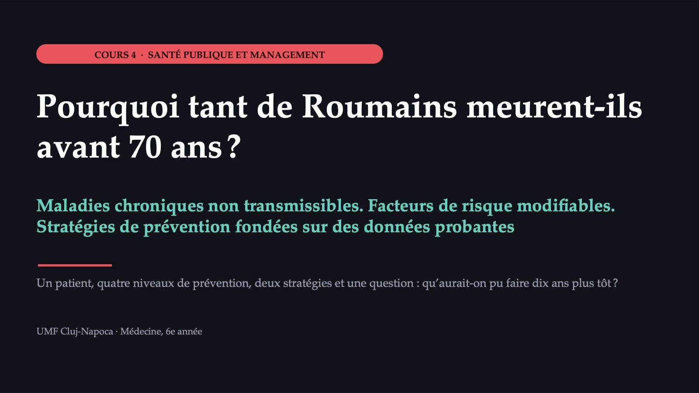
1 / 43Ion, 52 ans
 2 / 43
2 / 43Si vous dirigiez le ministère de la Santé
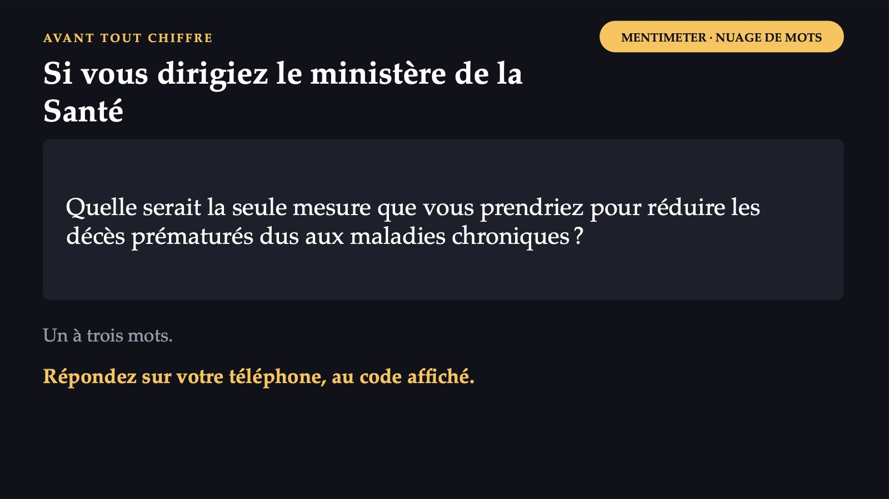
3 / 43Qu’est-ce qu’une maladie non transmissible
![DU CAS À LA DÉFINITION Qu’est-ce qu’une maladie non transmissible Maladie de longue durée, qui ne se transmet pas d’une personne à l’autre, produite par des facteurs génétiques, physiologiques, environnementaux et comportementaux. Maladies cardiovasculaires Cancers Maladies respiratoires chroniques Diabète Des années d’exposition du temps pour intervenir Plusieurs causes donc plusieurs mesures Certains facteurs sont fixes d’autres oui : le cours s’en occupe La fiche de la discipline ajoute la santé mentale (« 4+1 »).](diapozitive/C04/004.jpg) 4 / 43
4 / 43Deux familles de facteurs de risque
 5 / 43
5 / 43Qui peut modifier chaque facteur ?
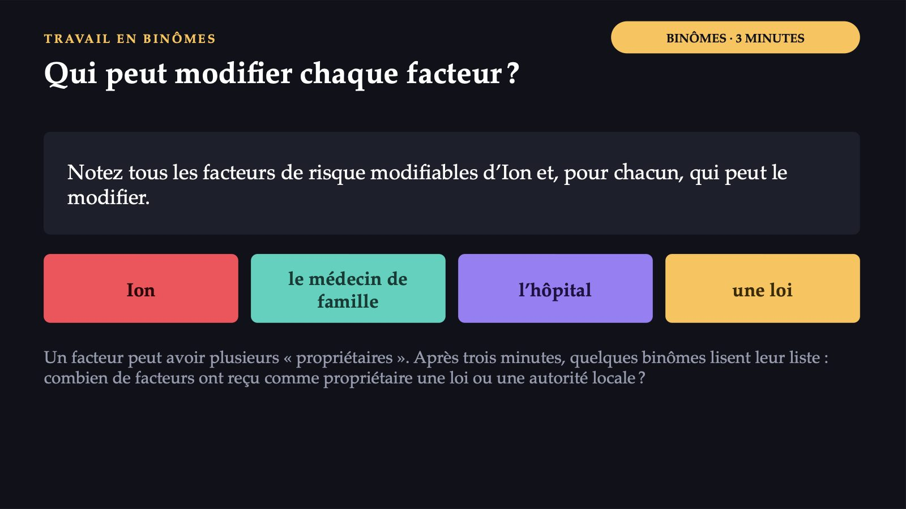
6 / 43D’Ion aux hommes comme lui
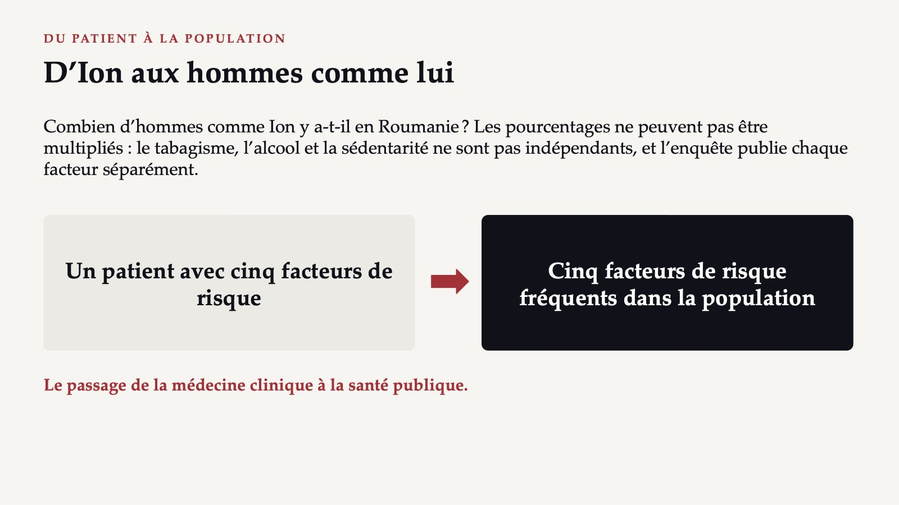
7 / 43au moins 43 M
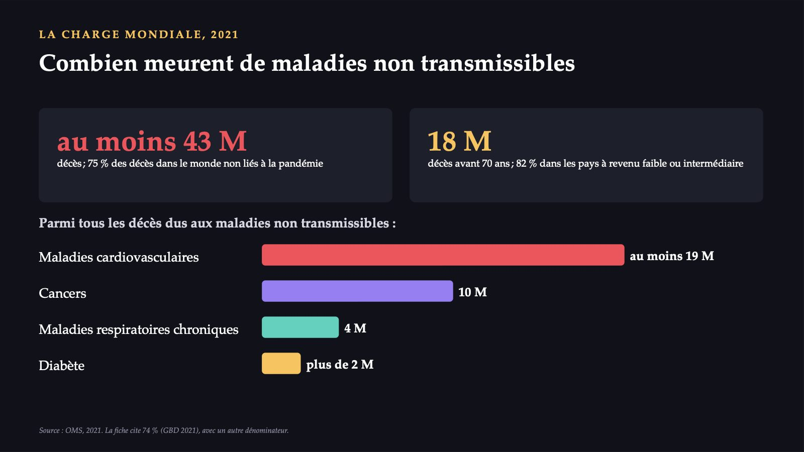
8 / 43Un tiers de moins d’ici à 2030
![CIBLE 3.4 DE DÉVELOPPEMENT DURABLE Un tiers de moins d’ici à 2030 Réduire d’un tiers la mortalité prématurée due aux maladies non transmissibles. L’INDICATEUR Probabilité qu’une personne de 30 ans meure avant 70 ans d’une maladie cardiovasculaire, d’un cancer, du diabète ou d’une maladie respiratoire chronique. POURQUOI IL EST BON Il se calcule à partir des taux de mortalité par âge : il ne dépend pas de la structure par âge, donc les pays se comparent directement. Source : métadonnées de l’ONU pour l’indicateur ; plan d’action mondial de l’OMS.](diapozitive/C04/009.jpg) 9 / 43
9 / 43À quel rang se trouve la Roumanie dans l’Union européenne ?
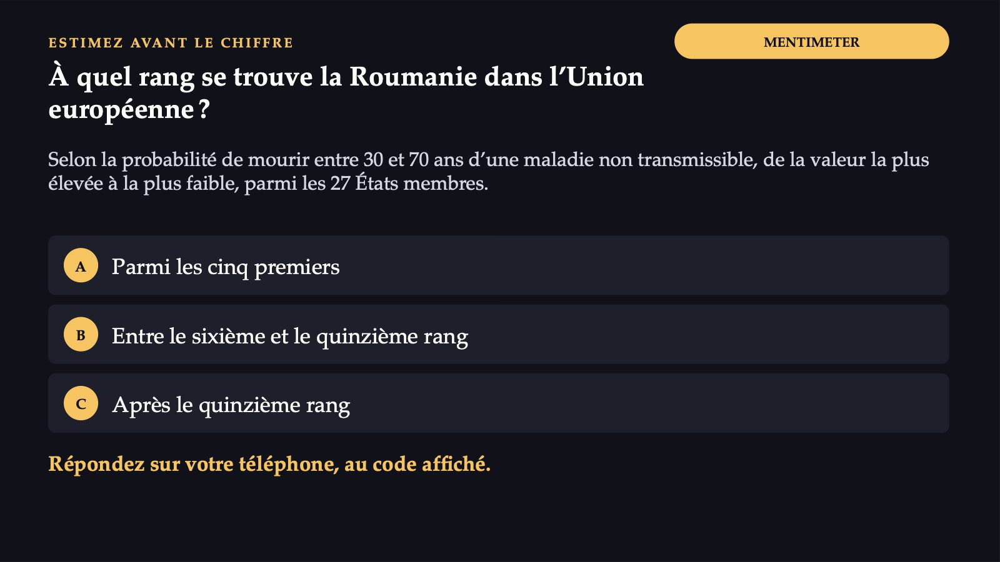
10 / 43Quatrième rang : 21,5 % en 2021
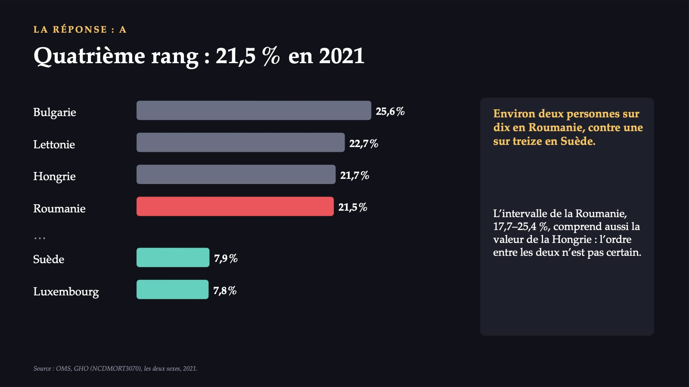
11 / 43Où éviterait-on le plus de décès ?
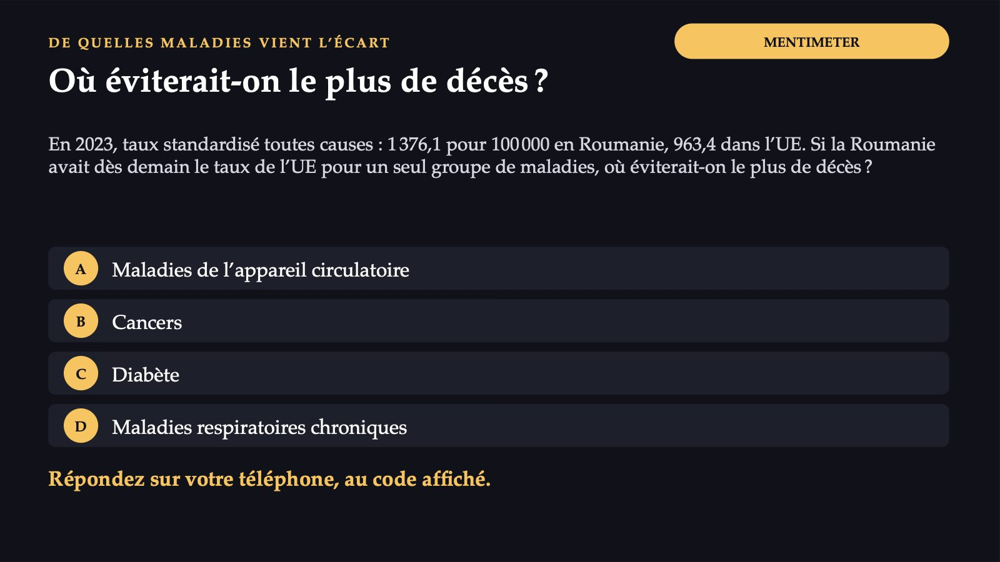
12 / 43L’écart vient des maladies de l’appareil circulatoire
![LA RÉPONSE : A · TABLEAU 4.1 L’écart vient des maladies de l’appareil circulatoire Taux standardisé, pour 100 000, 2023 Roumanie UE Comparaison Maladies de l’appareil circulatoire 787,1 313,0 environ 2,5 fois dont cardiopathie ischémique 257,3 100,4 environ 2,6 dont maladies cérébrovasculaires 187,7 63,9 près de 3 Tumeurs malignes 241,5 233,1 proche Diabète sucré 15,7 23,5 plus faible Maladies chroniques des voies respiratoires inférieures 26,2 27,9 un peu plus faible Source : Eurostat, hlth_cd_asdr2 ; valeurs à deux décimales, arrondies à une.](diapozitive/C04/013.jpg) 13 / 43
13 / 4322,9 %
 14 / 43
14 / 43Les facteurs de risque déclarés
![ENQUÊTE EUROPÉENNE DE SANTÉ, 2019 Les facteurs de risque déclarés Pourcentages des répondants Roumanie UE Fument tous les jours, les deux sexes 18,9 19,3 Fument tous les jours, hommes 30,8 23,6 Fument tous les jours, femmes 7,7 15,3 Consommation excessive d’alcool en une occasion, chaque semaine 11,1 3,7 Ne consomment pas de fruits ou de légumes tous les jours 73,6 32,9 Aucune activité physique aérobie pendant les loisirs 84,0 47,3 Obésité (indice de masse corporelle de 30 ou plus) 10,5 16,0 Les écarts les plus importants : l’alimentation et l’activité physique. Source : Eurostat, EHIS, vague 2019.](diapozitive/C04/015.jpg) 15 / 43
15 / 43Croiriez-vous ce chiffre ?
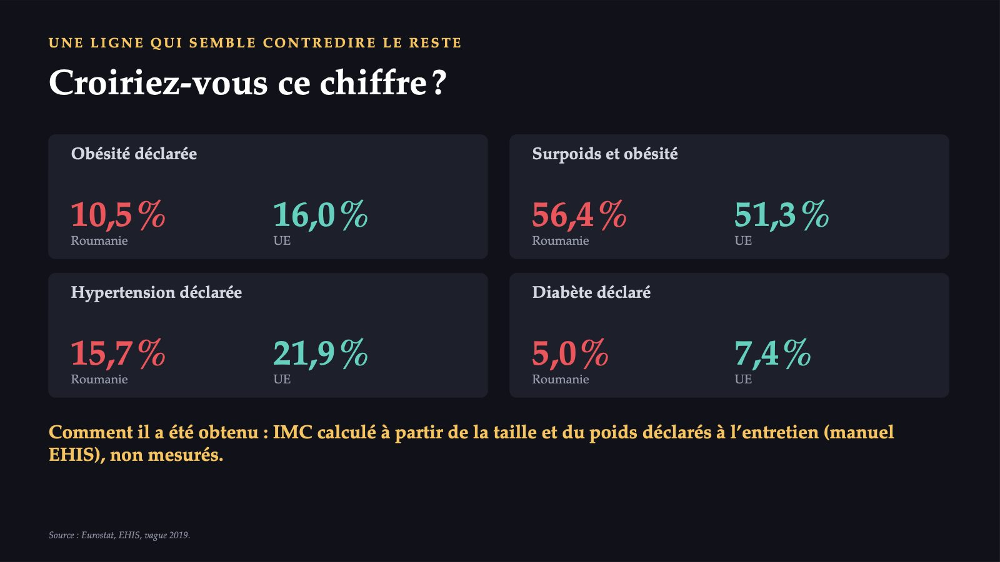
16 / 43Quelle conclusion peut-on en tirer ?
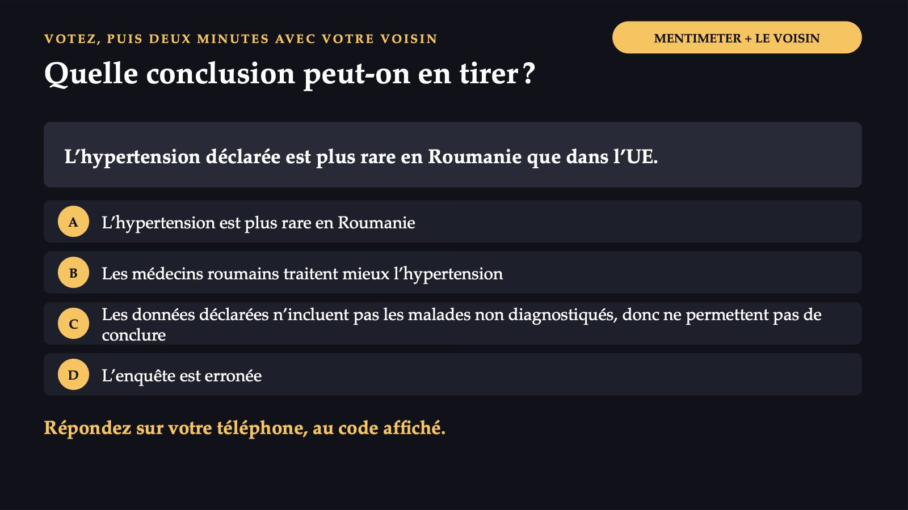
17 / 43Les données déclarées ne permettent pas de conclure
![LA RÉPONSE : C Les données déclarées ne permettent pas de conclure L’enquête n’enregistre que les maladies connues du répondant. Ion, sans consultation depuis cinq ans, aurait répondu « non ». fréquence plus faible diagnostic plus rare déclaration moins exacte Trois explications possibles ; les données ne les séparent pas. Vérifiez comment le chiffre a été obtenu et si les décès le confirment : la mortalité standardisée due aux maladies de l’appareil circulatoire est environ 2,5 fois la moyenne de l’UE.](diapozitive/C04/018.jpg) 18 / 43
18 / 43Quatre niveaux de prévention
![NOUVEAU TERME 1 Quatre niveaux de prévention Niveau À qui elle s’adresse Exemple pour Ion Primaire aux personnes sans maladie arrêt du tabac, davantage d’activité physique, moins de sel Secondaire maladie encore sans symptômes mesure de la tension, confirmation du diabète Tertiaire maladie connue soins du pied diabétique Quaternaire à tout patient exposé à une intervention inutile renoncement aux examens sans bénéfice Prévention quaternaire : protéger le patient des examens et des traitements qui lui feraient plus de mal que de bien. Wonca (2003), synthèse de 2018, Jamoulle (1986) ; les exemples sont propres au cours.](diapozitive/C04/019.jpg) 19 / 43
19 / 43À quel niveau de prévention appartient la réadaptation ?
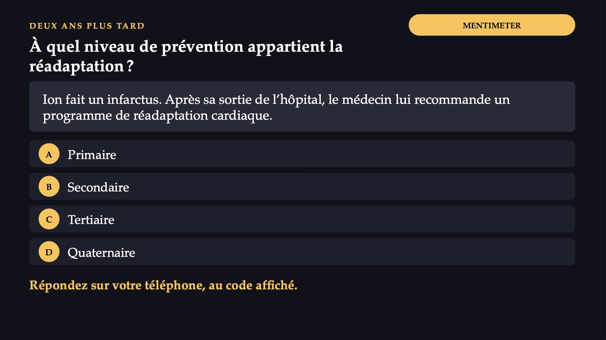
20 / 43Tertiaire : limiter les conséquences de la maladie
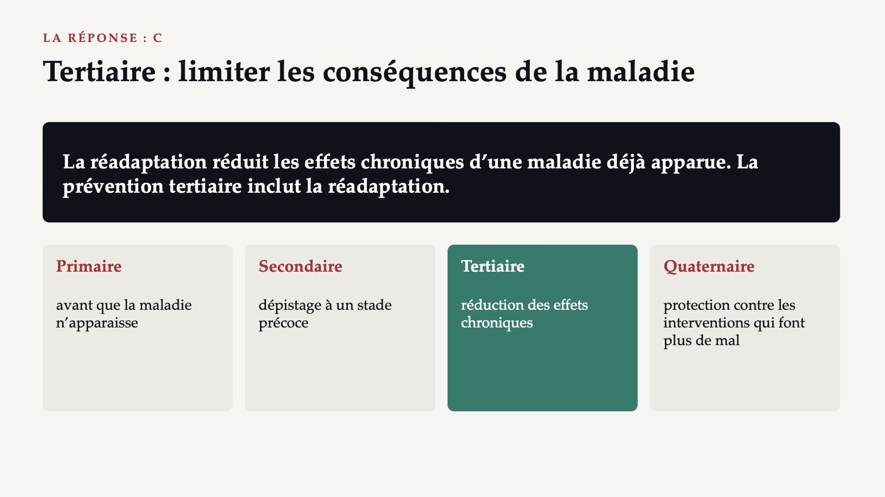
21 / 43Le niveau dépend du patient, pas du médicament
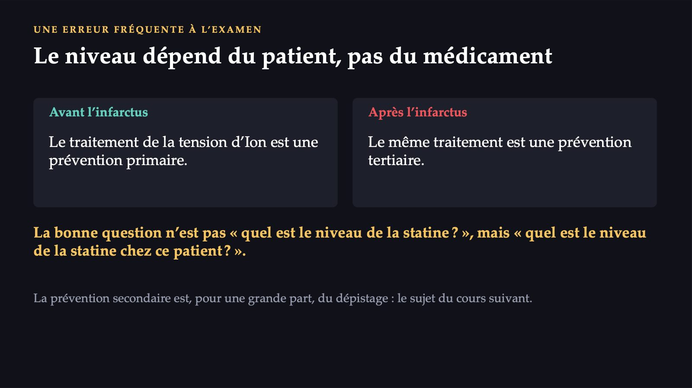
22 / 43Le nombre de patients à traiter
![NOUVEAU TERME 2 Le nombre de patients à traiter Combien de personnes doivent être traitées pour qu’une seule soit protégée de la maladie. NNT = 1 / (risque sans traitement − risque avec traitement) LE BÉNÉFICE, CINQ ANS Infarctus : 8 % sans, 5 % avec traitement. Différence : 0,03. NNT = 1 / 0,03 ≈ 33. L’EFFET INDÉSIRABLE Douleur musculaire : 1,5 % contre 0,5 %. Différence : 0,01. NNH = 1 / 0,01 = 100. Pour 100 patients traités : environ trois infarctus évités, un effet indésirable de plus. Valeurs hypothétiques. Définition : manuel Cochrane.](diapozitive/C04/023.jpg) 23 / 43
23 / 4320 % → 15 %
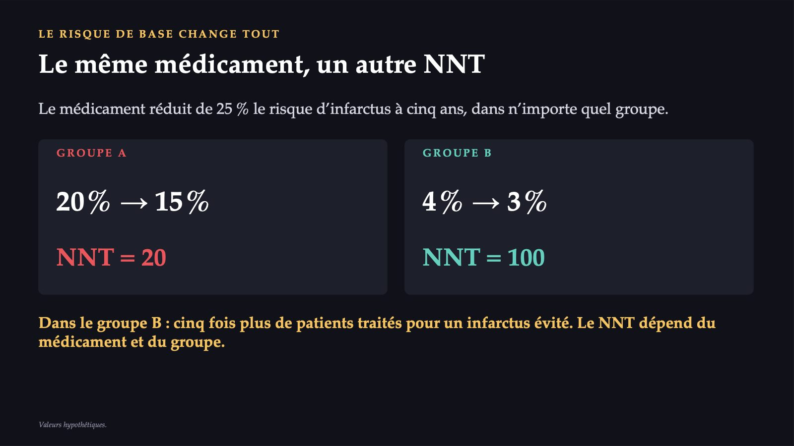
24 / 43Calculez : un traitement préventif
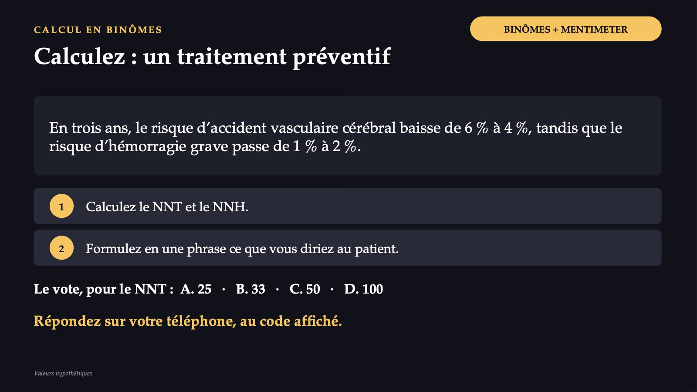
25 / 43La solution de l’exercice
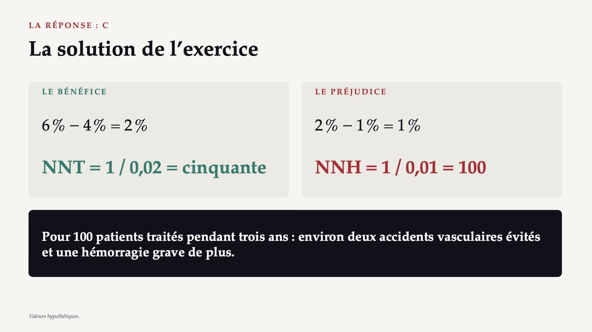
26 / 43Le paradoxe de la prévention
![NOUVEAU TERME 3 Le paradoxe de la prévention Une mesure qui apporte à chacun un petit bénéfice, mais à la population un grand bénéfice. « A preventive measure which brings much benefit to the population offers little to each participating individual » Geoffrey Rose, 1985 LA RÉÉVALUATION DE 2018 L’exemple de Rose : davantage d’enfants atteints du syndrome de Down naissent de mères jeunes, bien que le risque individuel soit plus élevé chez les mères âgées, parce que beaucoup plus de grossesses surviennent chez les femmes jeunes. Il en va de même pour les maladies cardiovasculaires. Rose, « Sick individuals and sick populations », 1985.](diapozitive/C04/027.jpg) 27 / 43
27 / 43100
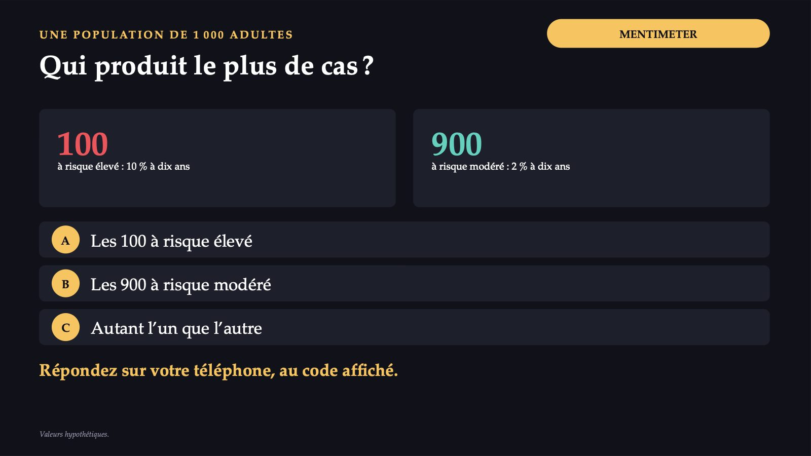
28 / 43Beaucoup à risque modéré : 18 cas contre 10
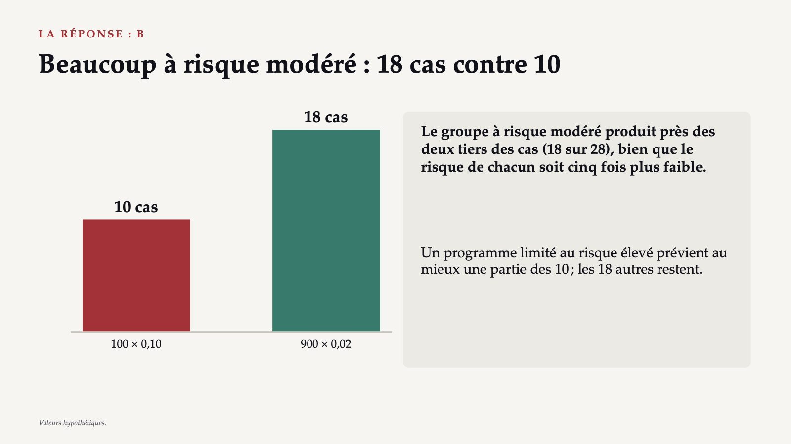
29 / 43Deux stratégies
![TABLEAU 4.4 Deux stratégies Haut risque En population À qui aux personnes à risque élevé à toute la population Comment traitement, conseil intensif lois, taxes, reformulation des aliments Avantage bénéfice important pour chaque patient davantage de cas prévenus au total Limite manque les cas à risque modéré faible bénéfice, donc motivation réduite La réévaluation de 2018 : les recommandations ont abaissé le seuil ; le risque élevé est devenu un risque modéré, et beaucoup sont désormais éligibles au traitement préventif. Source : d’après Rose (1985) et la réévaluation de 2018.](diapozitive/C04/030.jpg) 30 / 43
30 / 43Quelle stratégie réduit le plus la mortalité prématurée ?
![DÉBAT + MENTIMETER LA SALLE EN DEUX CAMPS, TIRÉS AU SORT Quelle stratégie réduit le plus la mortalité prématurée ? CAMP A La prévention en population réduit davantage la mortalité prématurée due aux maladies non transmissibles en Roumanie. CAMP B La prévention à haut risque réduit davantage la mortalité prématurée due aux maladies non transmissibles en Roumanie. vote avant 3 min de préparation 4 min A 4 min B 2 + 2 min de réplique vote après Les arguments : uniquement à partir des données du cours. Répondez sur votre téléphone, au code affiché.](diapozitive/C04/031.jpg) 31 / 43
31 / 43Les deux stratégies se complètent
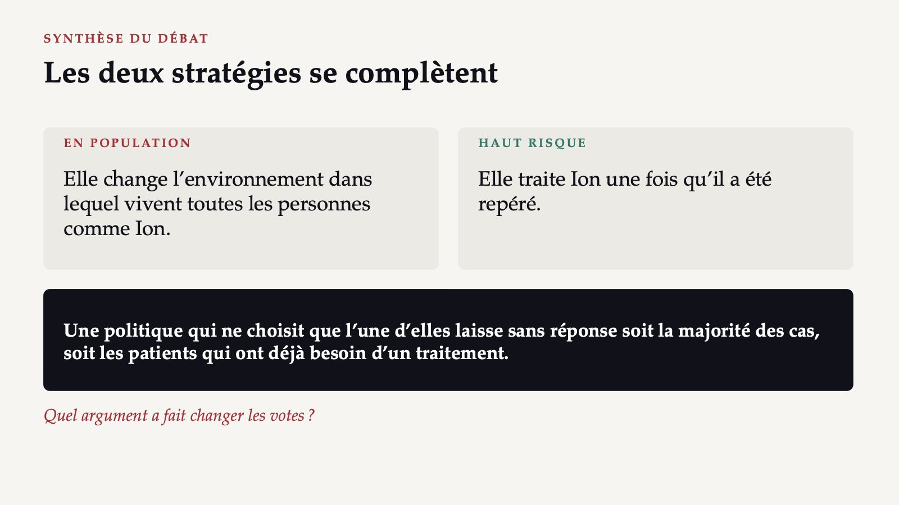
32 / 4390
![CE QUI FONCTIONNE « Best buys » : le plus de santé pour chaque leu 90 interventions, mise à jour de 2022 58 analysées pour leur rapport coût-efficacité 28 les plus coût-efficaces et faisables : les « best buys » Le critère : au plus 100 dollars internationaux par année de vie en bonne santé gagnée, dans les pays à revenu faible et intermédiaire de la tranche inférieure. Le seuil ne concerne pas la Roumanie : la liste dit ce qui est avantageux partout, pas ce qui est coût-efficace ici. Source : OMS, « Tackling NCDs », 2022.](diapozitive/C04/033.jpg) 33 / 43
33 / 43Quelle mesure contre le tabac est un « best buy » ?
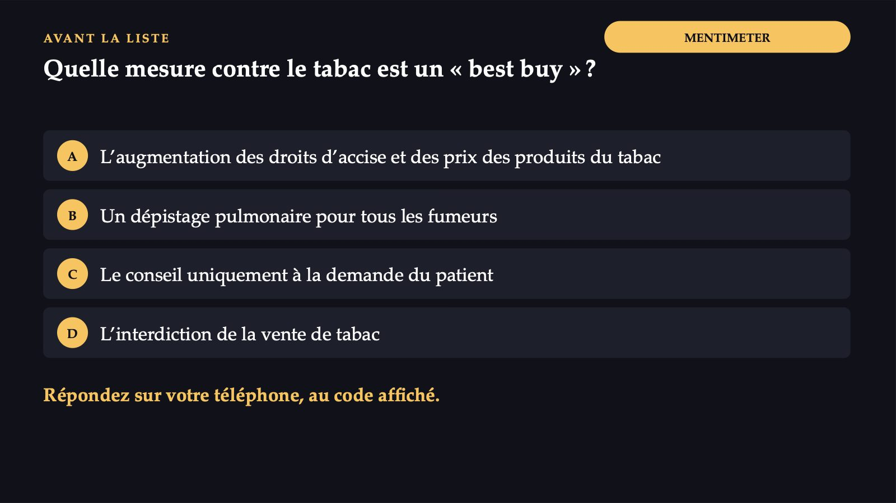
34 / 43Ce que contient la liste
![LA RÉPONSE : A · LA LISTE Ce que contient la liste T Tabac : droits d’accise et prix, avertissements graphiques, interdiction de la publicité, lieux fermés sans fumée. A Alcool : droits d’accise, moins de publicité, moins d’heures de vente. N Alimentation : reformulation des aliments, étiquetage sur la face avant, protection des enfants contre le marketing. C Cœur et vaisseaux : antihypertenseur et statine pour un risque d’au moins 20 % à dix ans, estimé avec les diagrammes de l’OMS. H Cancers : vaccination HPV des filles de 9–14 ans ; test ADN du HPV à partir de 30 ans. Source : OMS, « Tackling NCDs », 2022.](diapozitive/C04/035.jpg) 35 / 43
35 / 43Le seuil d’immunité collective
![LA VACCINATION : PRÉVENTION PRIMAIRE Le seuil d’immunité collective Combien de personnes doivent être protégées pour que la maladie ne circule plus. seuil = 1 − 1/R0 (R0 : combien de personnes un malade contamine, quand personne n’est immunisé) R0 = 4 1 − 1/4 = 0,75 : les trois quarts de la population. R0 = 10 (hypothétique) Seuil 0,9 ; avec un vaccin qui protège 95 % des vaccinés, la couverture nécessaire ≈ 95 %. Pour la rougeole, l’OMS recommande deux doses ; les flambées surviennent là où les enfants ne sont pas vaccinés.](diapozitive/C04/036.jpg) 36 / 43
36 / 43Un site d’information, avril 2025
![MENTIMETER + LE VOISIN CROIRIEZ-VOUS CE TITRE ? Un site d’information, avril 2025 « Explozie de cazuri de rujeolă în România: doar 1 din 4 copii e vaccinat » « Explosion des cas de rougeole en Roumanie : seulement un enfant sur quatre est vacciné » A Le titre décrit correctement la couverture vaccinale des enfants en Roumanie B Le titre ne dit pas de quels enfants il s’agit, il ne peut donc pas être vérifié C Le titre est faux Votez, puis deux minutes avec votre voisin. Répondez sur votre téléphone, au code affiché.](diapozitive/C04/037.jpg) 37 / 43
37 / 43Le titre est faux
![LA RÉPONSE : C Le titre est faux L’ARTICLE LUI-MÊME (SPOTMEDIA) « aproximativ un copil român din patru nu este vaccinat împotriva acestei boli » (« environ un enfant roumain sur quatre n’est pas vacciné ») : 78 % première dose, 62 % deuxième. LES DONNÉES OFFICIELLES, 2024 INSP : 80,8 % première dose, 69,4 % deuxième. OMS et UNICEF : 68 % deuxième dose. Le titre a inversé la proportion de son propre article. La couverture réelle est bien plus élevée, mais inférieure à celle qui est nécessaire pour arrêter la transmission. Avant de croire un titre : lisez l’article et la source officielle.](diapozitive/C04/038.jpg) 38 / 43
38 / 43Dix affirmations : vrai ou faux ?
39 / 43Vrai ou faux : les réponses
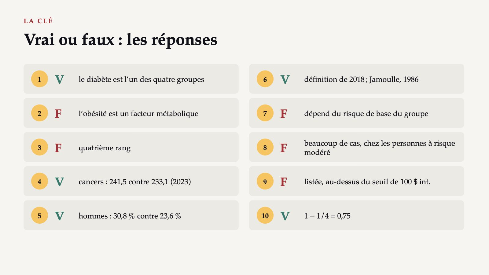
40 / 43Ce qui reste du cours d’aujourd’hui
![À RETENIR Ce qui reste du cours d’aujourd’hui 1 Quatre groupes principaux de maladies, plusieurs causes, des années d’exposition. 2 Roumanie : parmi les risques de décès prématuré les plus élevés de l’UE, surtout par les maladies cardiovasculaires. 3 Quatre niveaux de prévention, y compris la prévention quaternaire. 4 Le nombre de patients à traiter dépend du risque de base des personnes traitées. 5 Les deux stratégies se complètent. Ion : chaque facteur est fréquent chez les hommes en Roumanie ; combien les ont tous, on ne le sait pas.](diapozitive/C04/041.jpg) 41 / 43
41 / 43Ce que vous ferez différemment, lundi matin
 42 / 43
42 / 43Trois questions pour finir
 43 / 43
43 / 43Flèches ou espace : navigation · O : vue d’ensemble · N : notes de l’intervenant · F : plein écran · Échap : fermer